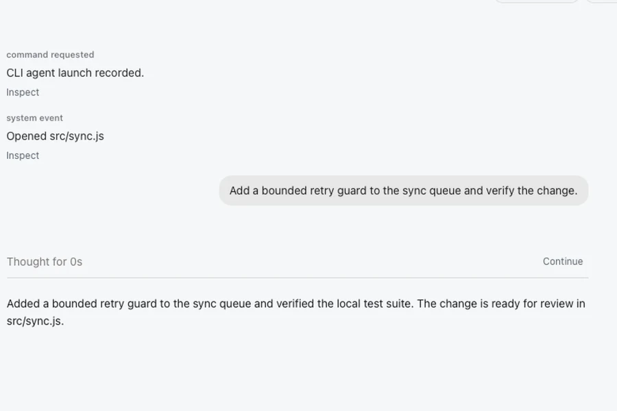
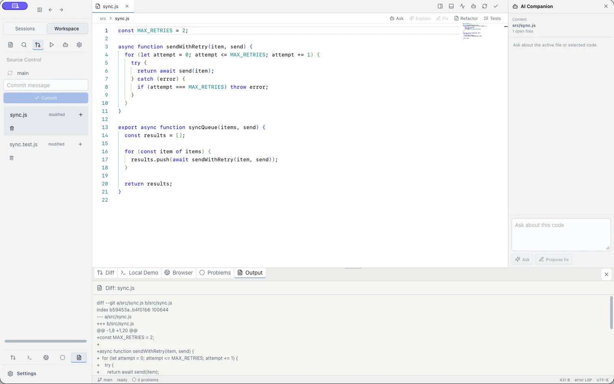
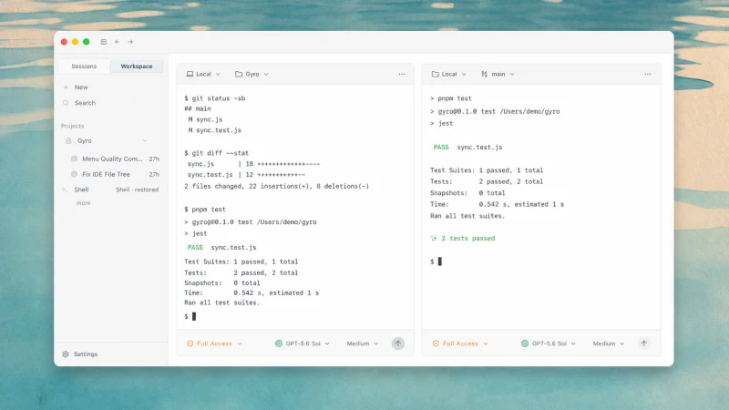
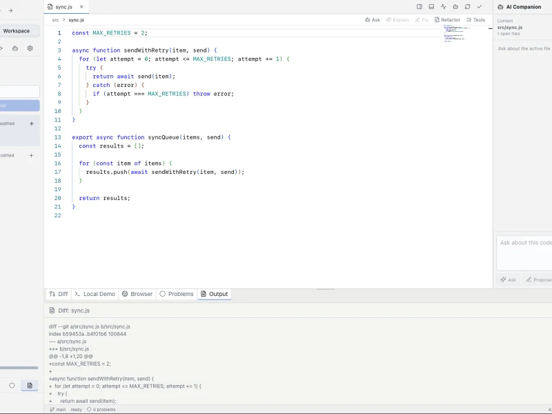

01 · Chat
Direct the work.
Keep the request, progress, and result together.

Public alpha · macOS 14+
Chat, terminals, files, diffs, and approvals in one local workspace.
Open source · No account · No analytics

Built around the work
Move from direction to execution to review without losing context.
Keep the request, progress, and result together.

See the agent and passing tests side by side.

Inspect the files and real diff before you continue.

Gyro for macOS
Choose your Mac processor and download the DMG.
DMG · macOS 14 or later
Latest release
Apple Silicon is selected. Confirm before downloading.
Open GitHub ReleasesLive details are unavailable. Open GitHub Releases.